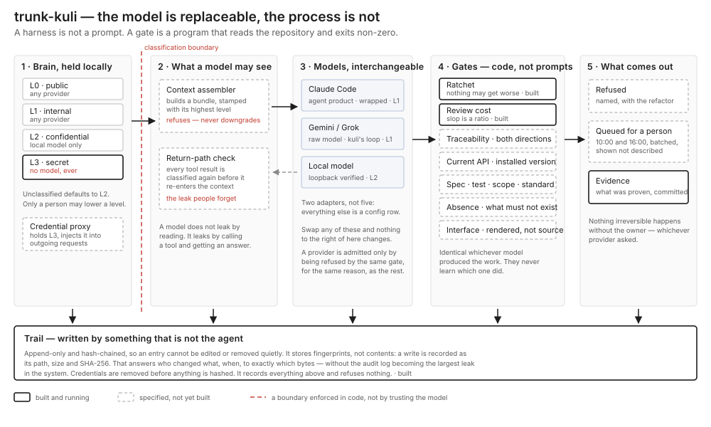

Software engineer · Da Nang, Vietnam
Sixteen years building backend systems in Java and Spring, fifteen of them for clients abroad — Switzerland, Japan, Korea, Singapore. Most of that work was in places where being wrong is expensive: a foreign-exchange contract platform for a Swiss bank, a healthcare platform running under European data-protection rules, a multi-cloud cost management platform.
I still design, build and test software myself. What I care about most is not that software runs, but that you can prove it is doing the right thing — acceptance criteria written before the code, tests that are themselves tested, and evidence of each run that someone who has never read the code can still read.
Available for contract work. mohoatu@gmail.com · LinkedIn · GitHub
Two versions, depending on the role:
Two things break every time you change model. The assistant forgets who you are, because your instructions and your history live inside one vendor's product. And the discipline evaporates, because most "AI engineering process" is a pile of prompts — and a prompt is a request, not a guarantee.
A harness is not a prompt. A harness is a set of gates written in ordinary code, which the model's output must pass, and which are identical whichever model produced it. A gate that refuses a change when a documented acceptance criterion has no test is a program that reads files and exits non-zero. It does not need the model's cooperation.

SlopCodeBench measured what happens when agents repeatedly extend their own earlier work: the best agent passed 14.8% of checkpoints, structural erosion rose in 77% of trajectories, and against 473 open-source Python repositories the agent code was 2.3× more verbose and 2.0× more eroded. The finding this project turns on is that explicit quality guidance reduced the starting verbosity by up to a third without affecting the rate of decay — a prompt changes the intercept; only something measuring the trend can change the slope.
So the two gates built first are the two nothing else does. A ratchet measures the repository and refuses any change that makes it worse — then names the measure and the functions carrying it, so the change can proceed by including the refactor that pays for it. And a review-cost gate treats slop as what it is: a ratio. Work that costs far less to produce than to review. A thousand lines serving one acceptance criterion is slop by arithmetic, whatever it contains.
Alongside them, an audit trail written by something that is not the agent — because an agent logging itself produces a claim, not evidence. Append-only and hash-chained, storing fingerprints rather than contents, so it answers who changed what, when, to exactly which bytes without the audit log becoming the largest leak in the system.
Running today across six repositories, holding each to its own baseline.
When a legacy system is rewritten, getting the new code to run is the easy part.
Proving it still produces the same numbers is the hard part — and diff is
no help, because most of what it reports is harmless.
This compares batch output before and after a migration and classifies every difference: ignorable, needs sign-off, or blocks release. On a Perl-to-Java rewrite it reduced 2,402 changed lines to 354 named records — all of which turned out to come from one sentence missing in the specification. Both implementations had read the document correctly. 132 automated checks, plus a mutation suite that proves those checks can fail.
A nightly batch job moved from an on-premise server to AWS, together with the programme artefacts a real migration needs: 7Rs disposition, target architecture, cutover runbook with rollback triggers, success criteria, risk register. Every parallel run returns a GO/NO-GO exit code.
A peer-to-peer lending marketplace designed to Vietnam's fintech regulatory sandbox. The premise: regulatory constraints are not business logic — they are states that must not exist and transitions that must not be reachable. Written that way, they can be enforced once and proven by test.
A traceability gate fails the build when a documented acceptance criterion has no test, and also when a test claims a requirement the documents no longer define. The ledger is append-only with no update path in the type, and reconciliation has no tolerance parameter at all. Evidence of each run is generated and committed.
Source not shared. Described here because the engineering decisions are the point.
Turns a Vietnamese prompt, or a long document, into a short narrated video. The pipeline plans a scene breakdown with a local LLM, synthesises Vietnamese narration, generates an illustration per scene, builds timed subtitles, and assembles a subtitled MP4 with ffmpeg.
The constraint that shaped it: no cloud AI provider. Everything runs locally or self-hosted — Ollama for planning, VieNeu-TTS for the voice, ComfyUI for the images. That matters for anyone whose content cannot leave their own machines. Every AI-backed stage degrades on its own terms: retry, fall back to a placeholder, or fail that one job with the stage and reason recorded, rather than failing the batch. Java.
Watch videos it produced → — narration, illustrations and subtitles all generated by the pipeline.
A set of games for a table of friends, played by passing a single phone around. No cards, no props, nothing to install.
The rules in src/game/ are pure functions: state and a
random generator in, new state out — no DOM, no timers, no platform SDK. Three things
follow. Tests never wait: a bomb with an 8-to-34-second fuse is resolved instantly by
asking the function, so the whole suite runs in under a second. Games of chance become
checkable: a fixed seed reproduces a round exactly, which is the only way to answer
whether a game is fair — and players will argue about that after the fourth
drink. And changing platform does not mean rewriting the rules.
342 automated checks, no dependencies at all. The README also states plainly what the UI tests cannot catch — a hidden button, text too small, a screen unreadable in a dim bar — because that is answered by one real evening out, not by a DOM shim.
Table Audit & Export for Confluence — an Atlassian Forge app I designed, built, priced and published alone. It finds data problems in Confluence tables and exports them to Excel, runs entirely in the browser, and contains no AI by deliberate choice. 743 automated checks and a mutation suite of 125 deliberate breakages.